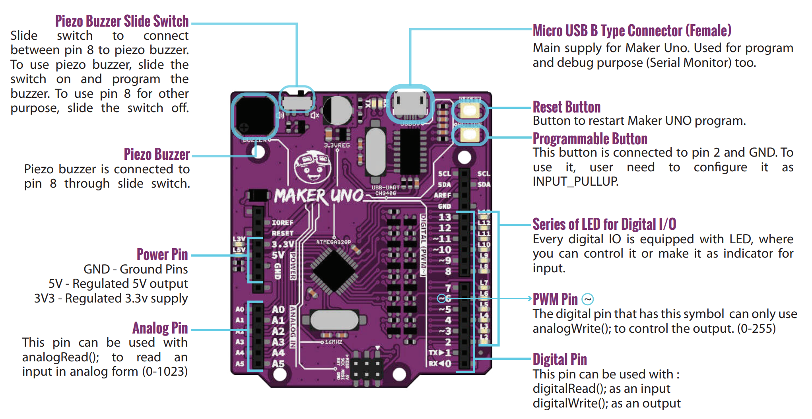
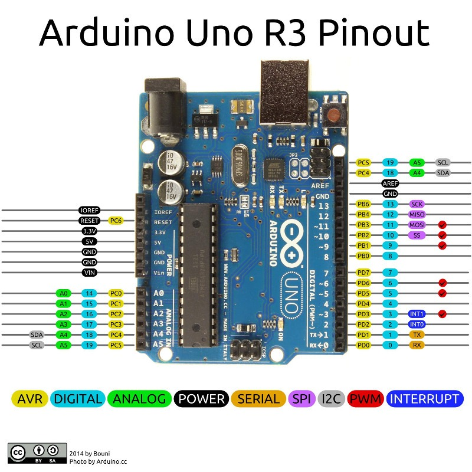
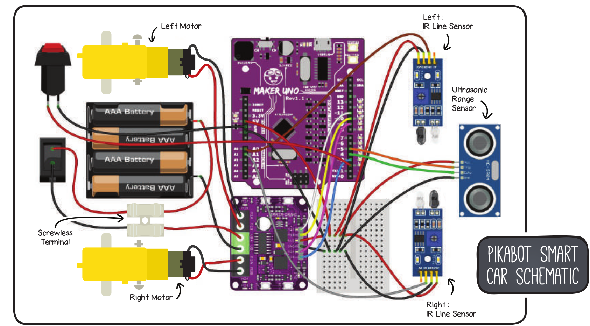
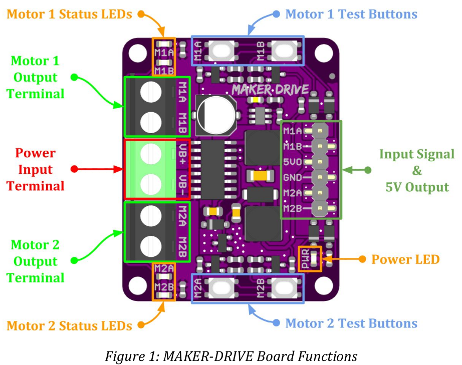
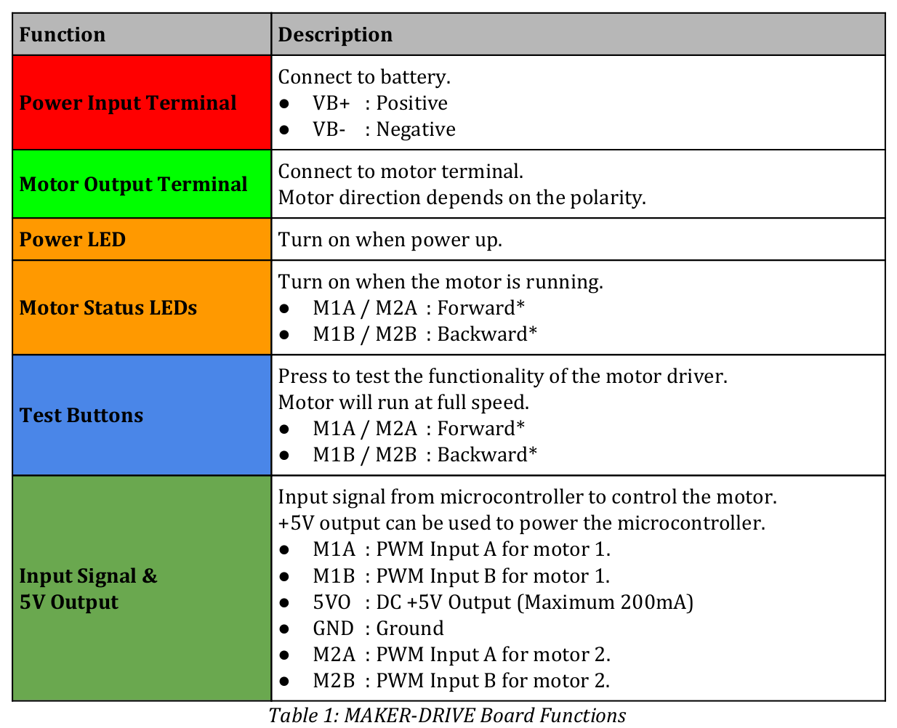
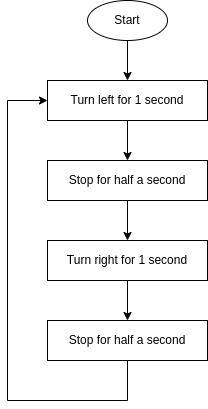

Liebhaberei
Dies ist mein Notizbuch für meine Liebhabereien (englisch: Hobby).
Rust
Referenzen
Rust UIs
GTK4
Projekte
Rustlings
Rust Buch
Betriebssysteme
Linux
Redox OS
Redox OS ist ein in Rust geschriebenes Betriebssystem, das auf einen Microkernel setzt.
Stand 2022-07-04:
Die Entwicklung von Redox OS ist noch in einem frühen Stadium. Es ist möglich das System von einem ISO Image oder mit QEMU zu booten. Da es noch keine Dateisystemtreiber gibt muss das vollständige Root-Dateisystem in den RAM passen.
FreeRTOS
Tasmota
Embedded Projekte
Referenzen
Arduino
F3Discovery
Microbit
Projekte
PikaBot
References
- Kit
- Arduino IDE
- The Arduino IDE from Ubunut 22.04 Repo didn't work.
- To get ttyUSB0 working, some brail service must get disabled. dmesg showed the issue
- The PikaBot is using an Cytron Maker Uno
 
Git
Prepare Arduino IDE
- Install Cytron Motor Drivers Library
PikaBot Book
- Example projects using the Arduino IDE.
- Git

Project 1 - Let's move it
Project 1.1 - Move forward
The first code example:
#include <CytronMotorDriver.h>
CytronMD motorLeft(PWM_PWM, 11, 10);
CytronMD motorRight(PWM_PWM, 9, 3);
void setup() { }
void loop() {
motorLeft.setSpeed(200);
motorRight.setSpeed(200);
}
Cytron Motor Driver



| Description | Arduino | Maker Drive | Description |
|---|---|---|---|
| PB3/OC2A | 11 | M1A | PWM A motor 1 |
| PB2/OC1B | 10 | M1B | PWM B motor 1 |
| PB1/OC1A | 9 | M2A | PWM A motor 2 |
| PB3/OC2B | 3 | M2B | PWM B motor 2 |
| Input A | Input B | Ouput A | Output B | Description |
|---|---|---|---|---|
| Low | Low | Low | Low | Break |
| High | Low | High | Low | Forward |
| Low | High | Low | High | Backward |
| High | High | Open | Open | Coast |
Cytron Motor Drivers Library
enum MODE {
PWM_DIR,
PWM_PWM,
};
class CytronMD
{
public:
CytronMD(MODE mode, uint8_t pin1, uint8_t pin2);
void setSpeed(int16_t speed);
protected:
MODE _mode;
uint8_t _pin1;
uint8_t _pin2;
};
setSpeed implementation:
case PWM_PWM:
if (speed >= 0) {
analogWrite(_pin1, speed);
analogWrite(_pin2, 0);
} else {
analogWrite(_pin1, 0);
analogWrite(_pin2, -speed);
}
break;
analogWrite()
Writes an analog value (PWM wave) to a pin. Can be used to light a LED at varying brightnesses or drive a motor at various speeds. After a call to analogWrite(), the pin will generate a steady rectangular wave of the specified duty cycle until the next call to analogWrite() (or a call to digitalRead() or digitalWrite()) on the same pin.
Project 1.2 - Move by time
#include <CytronMotorDriver.h>
CytronMD motorLeft(PWM_PWM, 11, 10);
CytronMD motorRight(PWM_PWM, 9, 3);
void setup() { }
void loop() {
motorLeft.setSpeed(200);
motorRight.setSpeed(200);
delay(1000);
motorLeft.setSpeed(0);
motorRight.setSpeed(0);
delay(500);
motorLeft.setSpeed(-200);
motorRight.setSpeed(-200);
delay(2000);
motorLeft.setSpeed(0);
motorRight.setSpeed(0);
delay(500);
}
delay()
Pauses the program for the amount of time (in milliseconds) specified as parameter. (There are 1000 milliseconds in a second.)
Project 1.3 - Move functions
#include <CytronMotorDriver.h>
CytronMD motorLeft(PWM_PWM, 11, 10);
CytronMD motorRight(PWM_PWM, 9, 3);
void robotStop() {
motorLeft.setSpeed(0);
motorRight.setSpeed(0);
}
void robotMove(int speedLeft, int speedRight) {
motorLeft.setSpeed(speedLeft);
motorRight.setSpeed(speedRight);
}
void setup() { }
void loop() {
robotMove(-200, 200); // turn left
delay(1000);
robotStop();
delay(500);
robotMove(200, -200); // turn right
delay(2000);
robotStop();
delay(500);
}

Project 1 - Challenge
#include <CytronMotorDriver.h>
#define TIME_30_DEG 400 // time depends on battery state and hardware
CytronMD motorLeft(PWM_PWM, 11, 10);
CytronMD motorRight(PWM_PWM, 9, 3);
void robotStop() {
motorLeft.setSpeed(0);
motorRight.setSpeed(0);
}
void robotMove(int speedLeft, int speedRight) {
motorLeft.setSpeed(speedLeft);
motorRight.setSpeed(speedRight);
}
void circle() {
robotMove(100, 200); // move inner wheel slower than outer wheel
delay(5000);
robotStop();
}
void rectangle() {
for(int i=0; i<4; i++) {
robotMove(200, 200);
delay(2000);
robotMove(-200, 200);
delay(3 * TIME_30_DEG); // 90°
}
robotStop();
}
void triangle() {
for(int i=0; i<3; i++) {
robotMove(200, 200);
delay(2000);
robotMove(-200, 200);
delay(4 * TIME_30_DEG); // 120°, outer angel of triangle
}
robotStop();
}
void setup() { }
void loop() {
circle();
delay(1000);
rectangle();
delay(1000);
triangle();
delay(1000);
}